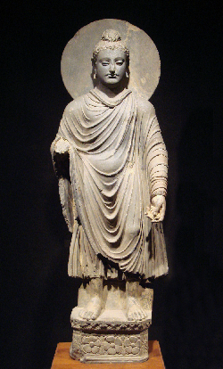

仏教の世界観です。
僕の書いたFacebookより。父親の話を参考にしています。
仏教では、私達の生きているこの宇宙以外にも、たくさんの宇宙があり、そのどれにも仏という最高の存在が居るとする。
四千年前に、この宇宙が存在する前からあった、この宇宙の教えを悟ったのが、釈迦如来である。如来とは仏という意味である。
釈迦は創造主ではなく、この宇宙の真理を悟り、それを人々に教える教主である。釈迦は、この宇宙の真理を、小学校、中学校、高校のように、みなに順番に教えた。とてもたくさんのことを教えたため、たくさんの経典にそれぞれ名前がついた。
この世界は常に移り変わり、同じままで留まるものは一つもない。だが、移り変わるということ自体は変わらない。常に移り変わる、ということが、常であり、あらゆるものが常であることはない。これを諸行無常とする。
ものは、あるでもなく、ないでもない。ものは、あるわけでもなく、ないわけでもない。これを空とする。
人間には、生老病死の苦しみがある。これが人生である。これを四苦とする。
人間は、生きている間にした悪行の全てを背負って、生まれ変わる。このカルマは、自分のした全ての善と悪の業を刻み込む。だから、生きている間に善根を生まなければならない。
釈迦すなわちブッダは、たくさんの教えをさまざまな経典に残したため、一部の教えを取り出してさまざま宗派が生まれた。
東南アジアに伝わった小乗仏教は、僧侶になった一部のものしか悟りにあやかることができない。そのため、小さな乗り物とする小乗仏教と呼ばれる。
これに対して日本などに伝わった大乗仏教では、誰でも簡単に仏の力にあやかれる。
真言宗では、大日如来を信仰しているが、悟りを得るためには出家して修行をしなければならない。
それに対して、阿弥陀如来を信仰する浄土宗では、阿弥陀仏に全てを委ねて、阿弥陀経の念仏を唱えれば、死んだ時に極楽浄土に往生できるとする。どんな人でも、悪人でも極楽浄土に行ける。
この分かりやすい簡単な教えは、鎌倉時代の飢餓や飢饉で、末法の世と呼ばれる苦しい社会の中で、人々の救いを求めて爆発的に広まり、今でも日本人は浄土宗やその流れをくむ浄土真宗を信仰している人が多い。
また、禅宗では、釈迦の言葉自体には意味がないとし、座禅を組んで瞑想し、雑念を廃すれば、波立つ水面が綺麗になり、悟りを写し取れると考えている。禅宗は武士道と結びついた。
仏教には、哲学的な側面があり、四諦や八正道など、自ら考え悟るための哲学を教えている。
四諦とは、苦とは何か、苦の原因とは何か、苦を滅するとは何か、苦を滅する方法とは何か、というブッダによる悟りの教えである。また、八正道とは、八つの正しい生き方と方法であり、これらによって人々は解脱し、仏となる。
仏教では、人間は「六道」に輪廻転生すると考える。
その六道とは、地獄、餓鬼、畜生、修羅、人間、天、である。
人間はその時のカルマに応じて、この6つの世界を輪廻転生する。
また、賢い人間のことを、仏教では「四聖」と言う。
その四聖とは、声聞、縁覚、菩薩、仏である。
声聞は、さまざまな人の声を聞き、学問に精通した学者である。
縁覚は、一つのことに秀でた芸術家やスポーツ選手である。
菩薩は、人々の手助けをし、見返りを求めない無償の善と助け合いの活動に生きた、聖職者や修道士である。
そして、菩薩道を歩むことで人は仏になる。仏は、悟った（覚った）人間であり、それを「覚者」と言う。
六道と四聖を合わせて「十界」と言う。
人間は仏になる。そして、最終的には、カルマと輪廻転生の連環から外れること、すなわち「解脱」のために生きている。
解脱とは「絶対に裏切らない境地」であり、何事においても良い状態のことである。

釈迦立像。
ブッダは、釈迦（しゃか）とも言い、仏教の開祖。
ブッダ個人の名前を指す場合は、サンスクリットでガウタマ・シッダールタ、パーリ語の発音ではゴータマ・シッダッタとされる。
“正しい教えを知らないで百年生きるよりも正しい教えを聞いて一日生きる方がはるかにすぐれている。”
“旅に出て、もしも自分よりすぐれた者か、または自分にひとしい者にであわなかったら、むしろきっぱりと独りで行け。愚かな者を道連れにしてはならぬ。”
“他人の過失を見るなかれ。他人のしたこととしなかったことを見るな。ただ自分のしたこととしなかったことだけを見よ。”
“「わたしは愚かである」と認められる者こそ、賢者である。”
“「その報いが、自分には来ないだろう」と思い、善行を軽く見てはいけない。水一滴の滴りも、つもれば水瓶をあふれさせる。心ある人は、小さな善を積み重ねて、いつのまにか、福徳に満たされているのである。”
“おのれを抑えることと、多くしゃべらずにじっと考えることは、あらゆる束縛を断ち切るはじめである。”―ブッダ
大乗は「大きな乗り物」と言う意味。全ての生き物（一切衆生）を救うことを意味する大乗の立場。
みんなのための（大乗）、みんなを救うためのブッダの教え、と言う意味。
修行をしている寺の住職だけではなく、一般庶民も悟りの恩恵にあやかることが出来るとされる。
東南アジアに広まった旧来の仏教。
「理解しやすい倫理（文英堂）」を参考に執筆しました。
人間は念仏などの自力によって往生出来るのではなく、ただひたすらに阿弥陀の救済力にすがり、自己を委ねるほかない、とする浄土真宗と親鸞の考え方。
僕が体験した、神との一連の対話活動と良く似ている。
「一隅を照らす」とは、比叡山を開いたことで有名な伝教大師・最澄の教え。
比叡山は京都と滋賀の間にある山で、唐へ渡って仏教を学んだ伝教大師・最澄が開いた延暦寺がある。
延暦寺では、鎌倉仏教の多くの僧を輩出し、その中には円仁、円珍、良忍、法然、親鸞、栄西、道元、日蓮など、名だたるメンバーである。これらの師匠の師匠がまさに最澄である。
僕は「この一隅を照らす」、という言葉には、「一隅を照らす人材を作り、自らが光となって人々を照らしなさい」という仏教的な真理としての言葉だけではなく、別の意味の言葉があると思う。「自分の今の現在地点を知り、今の自分の居る場所を照らす」といった意味がどこかにこめられているのではないかと思う。
延暦寺では、一風変わった修行をしている。ブラタモリというテレビ番組でやっていたのを見たことがあるが、お堂の暗闇の中を、念仏を唱えながら常に歩き続ける。これを、90日間、起きて寝るまで常にやる。だが、これを見て、「僕が歩き回りながら神と対話しているのと同じことをやりたい」ということが、僕はすぐに分かった。ドイツだけではなく、日本の最澄もきちんと分かっている。元三大師についても、僕のことを言いたかったのではないかと思う。僕は仏教も否定しない。それどころか、僕の考えたことや考え方が、著しく仏教の教えと類似する。仏教も正しい宗教だと、僕は確信を持って言える。キリスト教ともイスラム教徒も矛盾しないように、最初からそのようにできている。
また、自分はこれでは代々宗教の家庭であるように見えるかもしれませんが、そうでもありません。特に、父親は科学館の館長を務めたことのある理科の専門家であり、言ってしまえば「科学者」です。僕は父親のことが大好きで、幼いころから科学が好きで、Windowsパソコンやミニ四駆を良く触っていました。姉はそうした家庭で育ったこともあってプログラマになりました。僕は父親が大好きです。科学者を責めるつもりはありません。
僕の知っている事実の一つ、それが、仏教は自由な宗教ということです。
仏教では、あなたには誰も関与しません。
あなたの力で、あなたのなすがまま、考えるがままに行動し、思考と経験から、「全てのことが同じである」という真理に基づいてこの世界全てを横断し、精神世界との出会いから、心の振る舞いと学習を知り、自らの心を正常な安らぎへと導き、自ら知った世界だけでこの宇宙の真理を見出す、そういう宗教です。
仏教徒には、教えは必要ありません。教えは、自らの賢さと知識が作り出す「幻影」に過ぎないからです。その幻影と上手く付き合いながら、この世界全てを「自らが創り出すこと」で分かります。
仏教の教えは、精神論にすぎません。本当に必要な教えのようなものは、全て、あなたがあなたの思うままに、自由に作り出します。仏教では、あなたを制限するものはありません。たとえ危険な領域であっても、たとえ世界の破滅を呼んだとしても、それはあなたの自由です。その自由に対する報いに、あなたは応えなければなりません。仏教は自由であると同時に、この世界でもっとも恐ろしい宗教です。そして、本当に正しい宗教は、仏教しか存在しません。イスラム教の体験など、仏教徒から見れば、赤ん坊のよちよち歩きにすぎません。イエス・キリストなど、ブッダの足元にも及ばないでしょう。
仏教について言えるのは、「宗教的要素は多いが、聖なるものを信じ仰ぐ宗教の戒律的な教えでなく、一種の哲学的方法論である」という意見があることです。
キリスト教やイスラム教が「こうしなさい」とか「このように生きなさい」という戒律を定め、「逆らうものには刑罰がある」とか、「宇宙には創造主が居て、慈悲の心があり、信じなければならない」といった「宇宙観の説明」を与えるのに対して、仏教はブッダが「このように私は考えた」ということが言いたいだけの「哲学」に過ぎないというのです。
そして、哲学的な側面を見ると、「あまりに虚無主義的で、生きる情熱がない」という意見もあります。ただ、諦め、希望を手放し、なされるがままに生きるだけの「虚無主義的な思想」であるというのです。
ですが、これらはアジアの宗教である、儒教や道教などにも見て取れます。アジア人は、宗教を信じるのであっても、そこに合理的な「根拠」や「説明」を求めます。その意味で、輪廻転生と正しい生き方や考え方を説いた仏教は、「アジアの宗教」である、と言えると、僕はそこまでの前提に反して、そのように思います。
また、余談ですが、ブッダ本人は哲学が嫌いで、哲学については「これが何であるかという答えが得られないうちは、そのことをやめない」ということが、「哲学は自分を刺し殺す刃であってもその刃が何であるかを問うているうちはその刃を抜き出そうとしない」といったことを言っています（詳しく覚えていないので本当は多少違うことを言っているかもしれない）。
また、仏教の特徴として、「仏教は物理学と同時に信じられる」というのがあります。
仏教の宇宙観というのは、無始無終や三千世界のように、宇宙には始まりも終わりも無く、三千というさまざまな宇宙があると教えます。また、輪廻転生といって宇宙の中で生物が生まれ変わり輪廻し、縁起や因果応報といって「己の行いが己に返ってくる」といいます。
ですが、仏教というのは、きわめて現代の物理学と相性がいいのです。仏教の教えと全く同じことが、相対性理論などでも、似たような考え方が再度発見されているのです。
仏教の言うことは、哲学的で難しいですが、西洋哲学のヒュームなどが現れるずっと前から、同じことを言っています。
仏教は、「最初に生まれた正しい物理学」だったのかもしれません。ブッダは、苦行をしながら思索と瞑想をすることで、この宇宙の全てを悟ったのです。物理学の成果とあまり矛盾しない（矛盾はしても考え方の違いとして同時に信じられる）という点で、仏教はとても良い宗教です。
ブッダの創始した宗教です。
Wikipedia
書籍